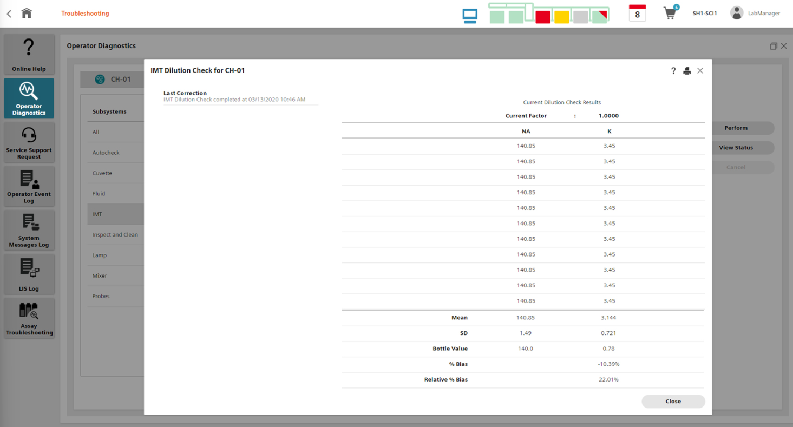
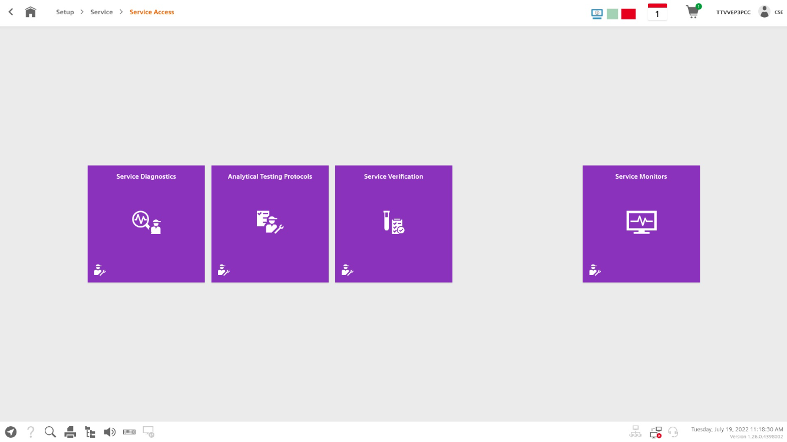
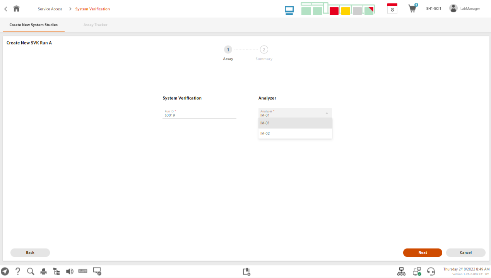
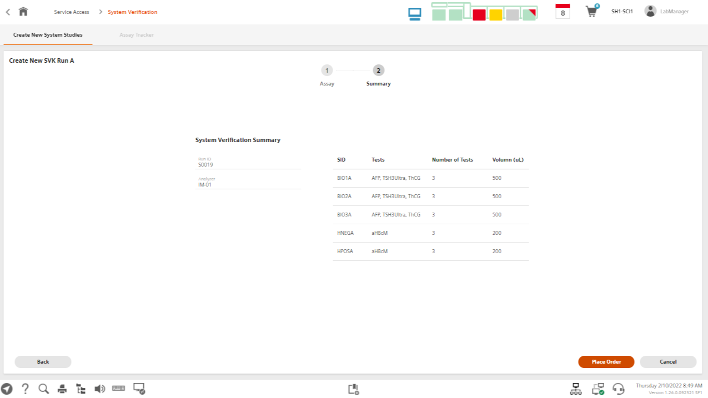
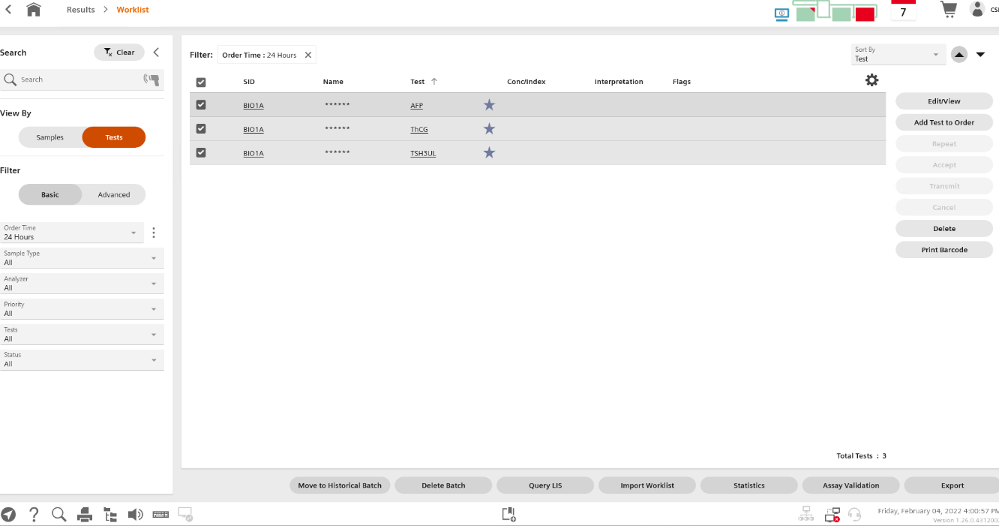

ATP Checkout: Installation - Atellica with SH Configuration - Startup Instructions
20 ATP Checkout
20.1 CH ATP Checkout
Процедуры CH ATP Checkout незначительно отличаются в зависимости от версии программного обеспечения, установленного на анализаторе. Определите версию ПО и следуйте соответствующей процедуре:
- CH ATP checkout для версии ПО 1.26 и выше: см. 20.1.4 Perform CH ATP
- CH ATP checkout для версии ПО 1.25.X и ниже: см. Atellica Solution ATP Troubleshooting / LDAT-000.840.55
Используемые реагенты и калибраторы
Reagent / Calibrator:
- ALT
- Enzyme 2
- GluH_3
- CHEM CAL
- Amm
- CHEM III CAL
- Sal
- Tox
20.1.1 Supplies Needed
Расходные материалы, заказываемые у Siemens Healthineers
| SMN | Description | Quantity |
|---|---|---|
| 11099311 | Atellica CH CHK | 1 Pack |
| 11099364 | Atellica CH AMIX Pack | 1 Vial |
| 11099300 | Atellica CH Diluent | 1 Container |
| 11099301 | Atellica CH Wash | 1 Container |
| 11099302 | Atellica CH Conditioner | 1 Container |
| 11099303 | Atellica CH Cleaner | 1 Container |
| 11099312 | Atellica CH Reagent Probe Cleaner 1 | 1 Pack (set) |
| 11099312 | Atellica CH Reagent Probe Cleaner 2 | 1 Pack (set) |
| 11099309 | Atellica CH Reagent Probe Cleaner 4 | 1 Pack (set) |
| 11099325 | A-LYTE IMT Dilution Check | 1 Bottle |
| 11099304 | A-LYTE IMT Standard A | 1 Container |
| 11099305 | A-LYTE IMT Diluent | 1 Container |
| 11099306 | A-LYTE IMT Standard B + Salt Bridge | 1 Container |
| 11099315 | A-LYTE Integrated Multisensor | 1 Cartridge |
| 11099411 | CHEM CAL | 1 Box |
| 11099335 | CHEM III CAL | 1 Box |
| 11097592 | Glucose Hexokinase_3 (GluH_3) | 1 Box |
| 11099318 | Enzyme 2 Calibrator | 1 Box |
| 11097605 | Alanine Aminotransferase (ALT) | 1 Box |
| 11097529 | Ammonia | 1 Box |
| 11097523 | Atellica CH Sal | 1 Box |
| 11099440 | Atellica CH Toxicology Calibration | 1 Box |
| 10284945 | BioRad Liquid Assayed MultiQual Level 1 | 1 Box |
| 10284946 | BioRad Liquid Assayed MultiQual Level 2 | 1 Box |
| 10284965 | BioRad Liquid Assayed MultiQual Level 3 | 1 Box |
| 10470794 | BioRad Liquicheck Ethanol / Ammonia Control | 1 Box |
20.1.2 Perform ATP Checkout
Используйте таблицу ниже для определения дальнейших действий в зависимости от результатов тестирования:
| First Test Result | Action | Second Test Result | Action | Third Test Result | Action |
|---|---|---|---|---|---|
| PASS | Сообщить результаты и перейти к следующему этапу | N/A | — | — | — |
| FAIL | Повторить тест | PASS | Повторить тест для подтверждения | PASS | Сообщить результаты и перейти далее |
| FAIL | Повторить тест | FAIL | Устранить неисправность | — | См. 20.1.5 ATP Rerun Guidelines and Basic Troubleshooting |
| FAIL | Устранить неисправность | N/A | — | — | См. 20.1.5 ATP Rerun Guidelines and Basic Troubleshooting |
Чувствительность аппаратных компонентов для CH ATP анализов
| Assay | Hardware Component Sensitivity |
|---|---|
| PQCV | Стабильность фотометра, точность / линейность, юстировка относительно реакционного кольца, оптическое состояние реакционной кюветы |
| PSN10 | Дозирование образца / разведения, юстировка и контроль уровня жидкости |
| P1N20 | Дозирование реагента зондом 1 (без «chase»), юстировка и контроль уровня жидкости |
| P1C20 | Дозирование реагента зондом 1 (с «chase»), юстировка и контроль уровня жидкости |
| DMIX | Смешивание при разведении |
| RMIX | Смешивание реагента |
| ALT | Юстировка мешалок образца и реагента, положение луча фотометра в оптическом тракте |
| GluH_3 | Юстировка мешалки образца |
| SAL | Смешивание реагента и температурная стабильность |
| Amm | Флюидика и смешивание образца и раствора для разведения |
20.1.3 Export Results / Экспорт результатов
20.1.3.1 Export Results from SRS / Экспорт результатов через SRS
- Выполните вход в SRS.
- В левом верхнем углу экрана нажмите кнопку Home.
- Выберите соответствующий регион (US, EU или CN).
- В поле Basic Search введите серийный номер анализатора CH 930.
- В правом верхнем углу экрана панели анализатора нажмите Run Action.
- В столбце Name найдите CH930_DQ_SRS_Results.
- В правой части экрана нажмите кнопку Monitor в строке CH930_DQ_SRS_Results, выберите Run, затем нажмите Close.
- На экране панели анализатора перейдите на вкладку Query Results и найдите CH930_DQ_SRS_Results в столбце Action Name.
- Если статус CH930_DQ_SRS_Results не Finished, нажмите значок Refresh в левом верхнем углу панели рядом с названием и серийным номером анализатора
(например, Atellica CH930 Analyzer – CMXXXXX). - После перехода статуса в Finished в правой части экрана нажмите Monitor в строке CH930_DQ_SRS_Results и выберите Download.
20.1.3.2 Export Results with No SRS Connectivity / Экспорт результатов при отсутствии подключения к SRS
Используйте данный метод для экспорта результатов CH, если SRS недоступен для системы.
Войдите в Service Diagnostics Mode.
См. раздел Enter Service Diagnostics Mode в
Common Software Service Procedures / LDAT-000.840.03.— или —
Подключитесь к диагностике анализатора через Remote Module Access (RMA).
См. раздел Remote Module Access (RMA) в
Common Software Service Procedures / LDAT-000.840.03.Перейдите в DB Tools.
В поле Select Data Item выберите CH Results.
Используйте поля Start Date и End Date для выбора временного диапазона результатов.
Нажмите Export to CSV, чтобы экспортировать результаты в файл формата
.csv.
20.1.4 Perform CH ATP / Выполнение CH ATP >= V1.26
⚠️ Данная процедура предназначена для выполнения CH ATP на системах Atellica Solution с программным обеспечением версии V1.26 и выше. Для выполнения CH ATP на системах с ПО до версии V1.26 см. Atellica Solution ATP Troubleshooting / LDAT-000.840.55.
⚠️ Перед запуском приведённых ниже тестов убедитесь, что упаковки RPC1, RPC2, RPC4 и CHK корректно загружены в соответствии с Atellica Solution Operator’s Guide, а также добавлен WBA.
Для каждого набора сервисных анализов используйте файл Atellica CH Analyzer – Blank ATP Spreadsheet / LDAT-010.820.01 для ввода результатов тестов, экспортированных из DB Tools (см. раздел DB Tools документа Service Software / LDAT-010.840.01), с целью расчёта сводных результатов по каждому сервисному анализу.
Перед переходом к следующему набору сервисных анализов убедитесь, что результаты соответствуют критериям PASS.
ℹ️ Инструкции по вводу данных из DB Tools приведены непосредственно в Blank ATP Spreadsheet.
- Войдите в программное обеспечение под пользователем CSE.
- В нижней части экрана нажмите Service Access.
20.1.4.1 Service Assay Testing / Тестирование сервисных анализов
- Нажмите Analytical Testing Protocols.
- Выберите CH Analytical Test Protocol.
- Нажмите Next.
- В разделе Select Analyzer выберите соответствующий анализатор CH 930.
Выполнение PQCV
- В разделе Assay Selection выберите PQCV.
- Нажмите Next.
- Нажмите Place Order.
ℹ️ Для PQCV образец не требуется. Анализатор автоматически выполнит тест.
- В появившемся окне “Order placed successfully” нажмите OK.
- Перейдите на экран Worklist и дождитесь завершения обработки PQCV.
- Оцените результаты теста PQCV.
- Введите экспортированные результаты в
Atellica CH Analyzer Blank ATP Spreadsheet / LDAT-010.820.01.
- Убедитесь, что тест PQCV пройден.
⚠️ Если PQCV не пройден, см. 20.1.5 ATP Rerun Guidelines and Basic Troubleshooting. Не продолжайте, пока PQCV не будет пройден.
| Test Name | # Replicates | Pass / Fail Criteria |
|---|---|---|
| PQCV | 221 | ≤ 0.04 для 90% кювет |
Тесты точности дозирования реагента / P1C20, P1N20, P2C20, P2N20
- Повторите шаги 3–7 для перехода к экрану выбора CH ATP анализов.
- В разделе Assay Selection выберите P1C20, P1N20, P2C20, P2N20.
- Нажмите Next → Place Order.
ℹ️ Образец не требуется. Анализатор автоматически выполнит тесты.
- После сообщения “Order placed successfully” нажмите OK.
- На экране Worklist дождитесь завершения тестов.
- Оцените результаты тестов.
- Экспортируйте результаты (см. 20.1.3 Export Results).
- Введите данные в Blank ATP Spreadsheet.
- Подтвердите, что тесты дозирования реагента пройдены.
| Test Name | Description | # Replicates | Pass / Fail Criteria |
|---|---|---|---|
| P1N20 | Reagent Probe 1 Neat | 30 | ≤ 1.25 %CV |
| P1C20 | Reagent Probe 1 Chased | 30 | ≤ 1.25 %CV |
| P2N20 | Reagent Probe 2 Neat | 30 | ≤ 1.25 %CV |
| P2C20 | Reagent Probe 2 Chased | 30 | ≤ 1.25 %CV |
Выполнение PSN10
- Повторите шаги 3–7 для перехода к экрану выбора CH ATP анализов.
- В разделе Assay Selection выберите PSN10.
- Нажмите Next → Place Order.
- Будет напечатано 6 штрих-кодов.
- В окне “Order placed. Barcodes printed” нажмите OK.
- Наклейте напечатанные штрих-коды на 6 пробирок, каждая из которых содержит 300 мкл красного раствора Atellica CHK.
- Загрузите пробирки в SH или на DL.
- На экране Worklist дождитесь завершения теста PSN10.
- Оцените результаты, экспортируйте их и введите в Blank ATP Spreadsheet.
- Подтвердите, что тест PSN10 пройден.
| Test Name | Description | # Replicates | Pass / Fail Criteria |
|---|---|---|---|
| PSN10 | Sample / Dilution Probe | 30 | ≤ 1.12 %CV |
Выполнение DMIX, SMIX и RMIX
- Повторите шаги 3–7 для перехода к экрану выбора CH ATP анализов.
- В разделе Assay Selection выберите DMIX, SMIX и RMIX.
- Нажмите Next → Place Order.
- Будет напечатан 1 штрих-код.
- В окне “Order placed successfully” нажмите OK.
- Наклейте штрих-код на пробирку с не менее 3150 мкл синего раствора Atellica AMIX.
- Загрузите пробирку на анализатор Atellica CH.
- На экране Worklist дождитесь завершения MIX-тестов.
- Экспортируйте результаты и введите их в Blank ATP Spreadsheet.
- Подтвердите, что MIX-тесты пройдены.
| Test Name | Description | # Replicates | Pass / Fail (ПО < V1.29) | Pass / Fail (ПО ≥ V1.29) |
|---|---|---|---|---|
| DMIX | Dilution Mixer | 30 | 97 – 103 | 96.5 – 103.5 |
| RMIX | Reagent Mixer | 30 | 97 – 103 | 98 – 105 |
| SMIX | Sample Mixer | 30 | 97 – 103 | 96.5 – 103.5 |
⚠️ Перед переходом к Calibration Setup убедитесь, что все сервисные методы соответствуют требованиям (PASS).
20.1.4.2 Perform Assay Calibration / Выполнение калибровки анализов
Войдите в систему под пользователем CSE и перейдите в Calibration Setup.
В разделе Calibration Results установите:
- Ordering Mode → By System
- Automatic Acceptance → Disabled
- Снимите флажок QC Results Must Be Within Ranges
Подготовьте все CH калибраторы в соответствии с инструкциями, указанными на упаковке соответствующих продуктов.
Определение CH калибраторов
- Перейдите в Calibration Definitions.
- Нажмите Scan Barcodes.
- Отсканируйте 2D-штрихкод Table of Assigned Values соответствующего калибратора.
- Нажмите OK.
- Повторите шаги 1–4 для всех оставшихся CH калибаторов.
Загрузка реагентов
Загрузите реагенты для соответствующего набора анализов:
- Новый набор анализов:
ALT, Amm, GluH_3, Sal - Старый набор анализов:
ALT, Amm, ALP_2c, GGT, Iron_2, GluH_3, TP
Создание заказов на калибровку
- Перейдите в Calibration Orders.
- В поле Select By выберите Assay.
- Выберите соответствующий анализатор.
- Выберите нужный набор анализов:
- Новый набор: ALT, Amm, GluH_3, Sal
- Старый набор: ALT, Amm, ALP_2c, GGT, Iron_2, GluH_3, TP
- Новый набор: ALT, Amm, GluH_3, Sal
- В разделе Select Reagent отметьте флажками соответствующие реагенты.
- В разделе Select Calibrator Material отметьте флажками соответствующие калибраторы.
- Нажмите Next.
- Нажмите Place Order.
- Нажмите Print Barcode.
- Установите флажок слева от Print, чтобы выбрать все калибраторные материалы.
- Наклейте напечатанные штрихкоды на пробирки, заполните пробирки соответствующим калибраторным материалом и загрузите калибраторы.
- Загрузите пробирки в SH или на DL.
- Убедитесь, что все калибровки приняты и соответствуют требованиям, прежде чем переходить к следующим этапам.
20.1.4.3 ALT QC Level 1
После успешного завершения калибровки анализов загрузите и импортируйте рабочий лист
CH_ATP_ALTQCL1_Worklist.
- Из CB-DOC загрузите
CH ATP Worklists / LDAT-010.820.03 / LDAT-010.820.05
и извлеките файл CH_ATP_ALTQCL1_Worklist.csv на сервисный ноутбук. - Скопируйте файл CH_ATP_ALTQCL1_Worklist.csv на USB-накопитель.
- Вставьте USB-накопитель в PCC.
- Перейдите в Worklist и выберите Import Worklist
(Worklist Type → Import Worklist). - Нажмите Browse, затем нажмите Browse ещё раз.
⚠️ Важно:
Не открывайте файл .csv в Microsoft Excel.
Excel удаляет некоторые запятые в файле, что делает рабочий лист непригодным для использования.
Для просмотра файла используйте Notepad. При необходимости убедитесь, что приложением по умолчанию для файлов.csvустановлен Notepad, а не Excel.
- В окне File Import перейдите к USB-накопителю, выберите
CH_ATP_ALTQCL1_Worklist.csv и нажмите Open. - Введите Run ID.
- Нажмите Import Worklist.
- В окне завершения операции нажмите OK.
- Перейдите в Worklist.
- Установите флажок для Sample ID: ALTQCLVL1.
- Нажмите Print Barcode.
- Наклейте штрихкод на пробирку и заполните её 2 мЛ BioRad Liquid Assayed MultiQual Level 1.
- Загрузите пробирку в SH или на DL.
- Отслеживайте выполнение тестов и дождитесь завершения анализов ALT, прежде чем переходить к следующему шагу.
- Оцените результаты теста ALT.
- Экспортируйте результаты в соответствующую пустую таблицу CH ATP и подтвердите, что тесты пройдены
(см. 20.1.3 Export Results).
| Assay Name | # Reps | Sample ID | Units | SD | %CV |
|---|---|---|---|---|---|
| ALT | 230 | ALTQCLVL1 | U/L | ≤ 1.199 | ≤ 4 |
20.1.4.4 Assay Testing
Тестирование анализов
- На главном экране (Home) нажмите Service Access.
- Выберите Service Verification.
- Нажмите Assay Verification, затем Next.
- Выберите анализатор и нажмите Next
(для одного задания может быть выбран только один анализатор).
GluH3 — Precision
- Выберите GluH_3, нажмите Next.
- Установите флажок Precision Evaluation Parameters и введите:
- Protocol Name: QCLVL01
- Number of Samples: 1
- Number of Replicates: 30
- Protocol Name: QCLVL01
- Нажмите Next, затем Place Order.
- Во всплывающем окне отметьте Precision и нажмите OK для печати штрихкодов.
Amm — Precision (Plasma)
- На главном экране снова выберите
Service Access → Service Verification → Assay Verification → Next. - Выберите анализатор, нажмите Next.
- В поле Specimen Type выберите Plasma.
- Выберите Amm, нажмите Next.
- Установите Precision Evaluation Parameters и введите:
- Protocol Name: Amm01
- Number of Samples: 1
- Number of Replicates: 30
- Protocol Name: Amm01
- Нажмите Next → Place Order.
- Во всплывающем окне отметьте Precision и нажмите OK для печати штрихкодов.
Sal — Precision
- Повторите путь
Service Access → Service Verification → Assay Verification → Next. - Выберите анализатор, нажмите Next.
- Выберите Sal, нажмите Next.
- Установите Precision Evaluation Parameters и введите:
- Protocol Name: QCLVL02
- Number of Samples: 1
- Number of Replicates: 30
- Protocol Name: QCLVL02
- Нажмите Next → Place Order.
- Во всплывающем окне отметьте Precision и нажмите OK для печати штрихкодов.
ALT + GluH3 + Sal — Precision
- Повторите путь
Service Access → Service Verification → Assay Verification → Next. - Выберите анализатор, нажмите Next.
- Выберите ALT, GluH_3 и Sal, нажмите Next.
- Установите Precision Evaluation Parameters и введите:
- Protocol Name: QCLVL03
- Number of Samples: 1
- Number of Replicates: 30
- Protocol Name: QCLVL03
- Нажмите Next → Place Order.
- Во всплывающем окне отметьте Precision и нажмите OK для печати штрихкодов.
Подготовка образцов
Наклейте штрихкоды на пробирки и заполните их в соответствии с таблицей:
| Sample ID | Sample | Assay | # Reps | Sample Type | Recommended Sample Volume |
|---|---|---|---|---|---|
| AMM01 | BioRad Liquicheck Ethanol/Ammonia Control | Amm | 30 | Plasma | 1 mL |
| QCLVL01 | BioRad Liquid Assayed MultiQual Level 1 | GluH_3 | 30 | Serum | 200 µL |
| QCLVL02 | BioRad Liquid Assayed MultiQual Level 2 | Sal | 30 | Serum | 200 µL |
| QCLVL03 | BioRad Liquid Assayed MultiQual Level 3 | ALT, GluH_3, Sal | 30 | Serum | 500 µL |
- Загрузите образцы в SH или на DL.
- Перейдите на экран Worklist и контролируйте выполнение тестов.
- Экспортируйте результаты в соответствующую пустую таблицу CH ATP и подтвердите, что тесты пройдены
(см. 20.1.3 Export Results).
Критерии приемлемости результатов
| Assay | Sample ID | Units | # Reps | SD Limit | CV Limit |
|---|---|---|---|---|---|
| Amm | AMM01 | µg/dL | 30 | NA | 6.5% |
| GluH_3 | QCLVL01 | mg/dL | 30 | 0.591 | 1.70% |
| GluH_3 | QCLVL03 | mg/dL | 30 | 1.798 | 1.30% |
| Sal | QCLVL02 | mg/dL | 30 | 0.492 | 5.00% |
| Sal | QCLVL03 | mg/dL | 30 | 0.685 | NA |
| ALT | QCLVL03 | U/L | 30 | 2.379 | 3.00% |
Выполнение DILCHK
ℹ️ Раствор Dilution Check стабилен в течение 15 минут после вскрытия флакона.
- Приостановите анализатор CH.
- Нажмите Unlock Front Lid.
- Откройте переднюю крышку.

- Поместите раствор DilCHK в чашку разведения (Dilution Cup) манифолда IMT
(см. Рис: Dilution Cup of IMT Manifold).- Dilution Cup

Откройте флакон DilCHK и пипетируйте 1 мЛ раствора DilCHK в 1 мЛ Atellica TTSC.
ℹ️ Если Atellica TTSC недоступны, используйте Dimension Vista SSC
(SMN 10472099 (KS860)).Закройте переднюю крышку анализатора.
Нажмите кнопку Resume.
Перейдите в Troubleshooting → Operator Diagnostics.
Выберите соответствующий CH анализатор.
В разделе Subsystems выберите IMT.
В поле Diagnostic Name выберите IMT Dilution Check и нажмите Perform
(см. Рис: Performing Dilution Check).

- Если появится всплывающее окно, нажмите OK
(см. Рис: Dilution Check Pop-up).

- Результаты будут отображены на экране
(см. Рис: Dilution Check Status). 
Оценка результатов DilCHK
- Если тест DilCHK пройден, примите новый коэффициент коррекции.
- Если тест DilCHK не пройден, выполните тест повторно.
- Если тест не пройден второй раз, выполните устранение неисправностей IMT
(см. IMT System Troubleshooting / LDAT-010.840.02).
Завершение процедуры
- Приостановите анализатор CH.
- Откройте переднюю крышку.
- Извлеките пробирку с раствором DilCHK.
- Закройте переднюю крышку.
- Нажмите Resume.
- С помощью функции DB-Tools экспортируйте результаты
(см. раздел DB-Tools документа Service Software / LDAT-010.840.01). - Убедитесь, что результаты соответствуют приведённым ниже критериям.
⚠️ Важно:
Система не должна передаваться Application Specialist до тех пор, пока все ATP-тесты не будут успешно пройдены.
Для устранения неисправностей сервисных диагностических анализов см.:
- PQCV Troubleshooting:
PQCV – Photometer Alignment and Reaction Bath Quality
(Service Diagnostic Assay Troubleshooting / LDAT-011.840.03)- Mix Troubleshooting:
Mix Troubleshooting
(Service Diagnostic Assay Troubleshooting / LDAT-011.840.03)- DilCHK Troubleshooting:
Dilution Check and Relative Bias Failures
(IMT System Troubleshooting / LDAT-010.840.02)- Metering Troubleshooting:
Metering Service Assays
(Service Diagnostic Assay Troubleshooting / LDAT-011.840.03)
Критерии приемлемости DilCHK (Табл. 41: Dilution Check Acceptance Criteria)
| Критерий | Значение |
|---|---|
| Na / K Precision | < 1% CV (Na < 1.4 SD; K < 0.04 SD) |
| % Bias | < 1.0% |
| Relative % Bias | < 3% |
| Максимально допустимый диапазон коэффициента коррекции | ± 5% (0.950 – 1.050) |
| Типичный диапазон коэффициента коррекции | 0.99 – 1.020 |
20.1.5 ATP Rerun Guidelines and Basic Troubleshooting
Рекомендации по повторному выполнению ATP и базовое устранение неисправностей
ℹ️ Система не должна передаваться Application Specialist до тех пор, пока все ATP-тесты не будут успешно пройдены.
Если источником ошибки является анализ (assay) или образец, повторите соответствующий тест, используя новый тестовый материал.
Если для устранения дефекта требуется перенастройка или юстировка, выполните все репликаты соответствующего теста дважды, чтобы подтвердить корректность устранения проблемы.
Также повторите все другие тесты, которые могли быть затронуты выполненной настройкой, даже если их исходные результаты соответствовали критериям приемлемости.Если было заменено какое-либо аппаратное обеспечение, повторите все тесты, относящиеся к заменённому оборудованию.
В случае отсутствующих репликатов определите причину и выполните следующие действия:
- Если отсутствие репликатов вызвано ошибкой оператора
(например, неверный рабочий лист, некорректно введённые заказы, случайная отмена теста во время выполнения, недостаточный объём образца в пробирке и т.п.),
повторите все репликаты только для уровня, на котором произошёл сбой.
- Если отсутствие репликатов вызвано ошибкой оператора
20.2 IM ATP Checkout
ℹ️ При установке нескольких IM-анализаторов для экономии времени допускается выполнять ATP-проверки параллельно.
В таблице 42 приведён перечень материалов, необходимых для выполнения данного тестирования (Atellica IM SVK Kit, SMN 10998191).
Материалы
| Material | Atellica IM SMN | Required Quantity |
|---|---|---|
| IM TSH3UL Kit (основные реагенты и калибратор) | 10995703 | 1 набор |
| IM AFP Reagents | 10995441 | 1 набор |
| IM Calibrator D (калибратор AFP) | 10995509 | 1 набор |
| IM ThCG Reagent | 10995690 | 2 набора |
| IM Calibrator B (калибратор ThCG) | 10995503 | 1 набор |
| IM aHBcM Kit (основные/вспомогательные реагенты и калибратор) | 10995449 | 1 набор |
| IM HBc IgM Quality Control Material | 10995450 | 1 набор |
| BioRad Lyphocheck ImmunoAssay Plus Controls (уровни 1, 2 и 3) | 370 | 4 флакона на уровень (всего 12 флаконов) |
Табл. 42. Atellica IM SVK Kit (SMN 10998191)
ℹ️ System Verification Kit предназначен только для сервисного персонала и не предназначен для применения в качестве IVD.
Все материалы, оставшиеся после завершения системной верификации, подлежат утилизации в соответствии с местными экологическими требованиями.
20.2.1 Assay Calibrations and Verifications for Software v1.26 and Later
Калибровка и верификация анализов для ПО v1.26 и выше
20.2.1.1 Perform Assay Calibrations (v1.26 and Later)
Выполнение калибровки анализов (v1.26 и выше)
- Подготовьте все калибраторы и контроли в соответствии с инструкциями, указанными на упаковке соответствующих продуктов.
ℹ️ Примечание: для некоторых продуктов может потребоваться перейти в Document Library и загрузить инструкции по применению (IFU).
Ввод Master Curve для каждого анализа
- В Navigator выберите IM Test Definitions
(см. рис. Figure 5).
- На экране IM Test Definitions нажмите Scan Barcode
(см. рис. Figure 6).
- Начните сканирование 2D-штрихкодов на карточке Master Curve для AFP
(см. рис. Figure 7).

- В диалоговом окне Scan IM Test Definition нажмите OK.
- Повторите шаги 2–4 для анализов TSH3Ultra, ThCG и aHBcM.
Ввод определений калибраторов (Calibrator Definitions)
- В Navigator выберите Cal Definitions.
→ Отобразится экран Cal Definitions
(см. рис. Figure 8).
- На экране Cal Definitions последовательно отсканируйте все линейные штрихкоды с Calibrator Card для AFP, сверху вниз.
- В диалоговом окне Scan Barcode нажмите OK.
- Нажмите Print Barcodes, чтобы распечатать штрихкоды калибраторов для пробирок AFP.
- Повторите шаги 2–4 для TSH3Ultra, ThCG и aHBcM.
Загрузка реагентов и создание заказов на калибровку
- Загрузите в систему все основные и вспомогательные реагенты.
- В нижней части экрана Cal Definitions нажмите Calibration Orders.
→ Отобразится экран Calibration Orders. - В разделе Select Assay(s) for Calibration выберите:
- AFP
- TSH3Ultra
- ThCG
- aHBcM
- В разделе Select Reagents выберите соответствующую партию реагентов.
- Нажмите Next.
- Промаркируйте пробирки для образцов штрихкодами калибраторов, распечатанными на шаге 5, и добавьте в каждую пробирку соответствующий калибратор.
| Calibrator (Test Tube) | Test / Control Name (Order) |
|---|---|
| CALB | ThCG |
| CALD | AFP |
| CALH | TSH3UL |
| CALaHBcm | aHBcm |
Табл. 43. Названия калибраторов
ℹ️ Примечание:
Процесс калибровки является двухточечным.
Флаконы калибраторов для каждого анализа имеют маркировку: - L — низкая концентрация
- H — высокая концентрацияПри этом напечатанные штрихкоды не используют обозначения L и H, а применяют «1» и «2».
При заполнении пробирок необходимо учитывать: L = 1, H = 2.
- Загрузите промаркированные пробирки с калибраторами в систему.
→ Это инициирует выполнение калибровки анализов.
20.2.1.2 Perform System Verification Assays – Run A (v1.26 and Later)
Выполнение системной верификации анализов — Run A (ПО v1.26 и выше)
Run A
Для выполнения Run A используется следующий рабочий лист (worklist).
Рабочий лист Run A
| Sample ID | Sample | Test | # Reps | Dilution | Sample Type | Minimum Sample Volume | Recommended Sample Volume |
|---|---|---|---|---|---|---|---|
| BIO1A | BioRad Lyphocheck Immunoassay Plus Level 1 Control | AFP | 3 | Без разведения | Serum | 399 µL | 500 µL |
| TSH3Ultra | 3 | Без разведения | Serum | ||||
| ThCG | 3 | Без разведения | Serum | ||||
| BIO2A | BioRad Lyphocheck Immunoassay Plus Level 2 Control | AFP | 3 | Без разведения | Serum | 399 µL | 500 µL |
| TSH3Ultra | 3 | Без разведения | Serum | ||||
| ThCG | 3 | Без разведения | Serum | ||||
| BIO3A | BioRad Lyphocheck Immunoassay Plus Level 3 Control | AFP | 3 | Без разведения | Serum | 399 µL | 500 µL |
| TSH3Ultra | 3 | Без разведения | Serum | ||||
| ThCG | 3 | Без разведения | Serum | ||||
| HNEGA | HBc IgM Negative Control | aHBcM | 3 | Без разведения | Serum | 189 µL | 200 µL |
| HPOSA | HBc IgM Positive Control | aHBcM | 3 | Без разведения | Serum | 189 µL | 200 µL |
Выполните Run A для систем с программным обеспечением версии 1.26 и выше.
- На главном экране (Home) нажмите Service Access
(см. Fig.: Clicking Service Access).

- Нажмите Service Verification
(см. Fig.: Clicking Service Verification).

→ Откроется экран System Verification.
- На экране System Verification выберите SVK Run A и нажмите Next
(см. Fig.: Selecting SVK Run A).

→ Отобразится экран Create New SVK Run A.
Выберите соответствующий IM-анализатор и нажмите Next
(см. Fig.: Selecting the appropriate IM analyzer).
Selecting the appropriate IM analyzer → Отобразится System Verification Summary.
Просмотрите System Verification Summary и нажмите Place Order
(см. Fig.: Reviewing summary and placing order).
Reviewing summary and placing order → Появится диалоговое окно завершения операции, будут напечатаны штрихкоды.
Нажмите OK.
Промаркируйте пробирки штрихкодами образцов, напечатанными на шаге 5,
и добавьте в каждую пробирку соответствующий образец (контроль)
(см. Table 1 для требуемых объёмов).Загрузите пробирки с образцами в систему. → Это инициирует выполнение тестов.
В левом верхнем углу экрана Assay Verification нажмите значок Home,
чтобы вернуться на главный экран. Затем на главном экране нажмите Worklist.
После завершения тестов для каждого анализа будет отображено среднее значение концентрации (Mean Concentration) по 3-м повторам.На экране Worklist установите флажок Filter, чтобы выбрать все анализы, затем нажмите Edit/View.

Отобразится экран Patient Sample Details.
- На экране Patient Sample Details выберите название анализа в колонке Test, чтобы открыть экран Test Details. (см. рис. Figure 9).
→ Отобразится экран Test Details.
Для каждого Sample ID внесите в файл IM ATP Worksheet.xls следующие значения: - Mean Concentration - % CV
для каждого анализа.
ℹ️ Для анализа aHBcM вводите каждый результат как отдельный повтор - рабочий лист автоматически рассчитает Mean и % CV. Убедитесь, что все контроли дали результаты.

- Рабочий лист автоматически сравнивает Mean Concentration и % CV для каждого уровня QC с установленными спецификациями и выделяет красным, если:
среднее значение выходит за допустимый диапазон;
% CV превышает установленный предел для любого уровня QC.
- Если какой-либо контроль не соответствует спецификации, его необходимо повторить.
ℹ️ См. раздел 20.2.2 Analyze and Verify the Final Data — Analyze and Verify the Final Data для подтверждения приемлемости выполнения Run A. Если Run A не пройден, повторите только неудавшиеся контроли.
- Перед переходом к Run B убедитесь, что все результаты приемлемы. Если повторный контроль также не проходит, выполните поиск и устранение неисправности и задокументируйте корректирующие действия. См. раздел 20.2.3 Troubleshooting ATP — Troubleshooting ATP.
20.2.1.3 Perform System Verification Assays – Run B (v1.26 and Later)
Выполнение системной верификации анализов — Run B (ПО v1.26 и выше)
Run B
Для выполнения Run B используется следующий рабочий лист (worklist).
Рабочий лист Run B
| Sample ID | Sample | Test | # Reps | Dilution | Sample Type | Minimum Sample Volume | Recommended Sample Volume |
|---|---|---|---|---|---|---|---|
| BIO1B | BioRad Lyphocheck Immunoassay Plus Level 1 Control | AFP | 20 | Без разведения | Serum | 2660 µL | 2800 µL |
| TSH3Ultra | 20 | Без разведения | Serum | ||||
| ThCG | 20 | Без разведения | Serum | ||||
| BIO2B | BioRad Lyphocheck Immunoassay Plus Level 2 Control | AFP | 20 | Без разведения | Serum | 2660 µL | 2800 µL |
| TSH3Ultra | 20 | Без разведения | Serum | ||||
| ThCG | 20 | Без разведения | Serum | ||||
| BIO3B | BioRad Lyphocheck Immunoassay Plus Level 3 Control | AFP | 20 | Без разведения | Serum | 2660 µL | 2800 µL |
| TSH3Ultra | 20 | Без разведения | Serum | ||||
| ThCG | 20 | Без разведения | Serum | ||||
| HNEGB | HBc IgM Negative Control | aHBcM | 20 | Без разведения | Serum | 420 µL | 600 µL |
| HPOSB | HBc IgM Positive Control | aHBcM | 20 | Без разведения | Serum | 420 µL | 600 µL |
Выполните Run B для систем с программным обеспечением версии 1.26 и выше.
Выполнение System Verification — Run B (IM, v1.26 и выше)
- На главном экране (Home) нажмите Service Access
(см. рис. Figure 11).
- Нажмите Service Verification
(см. рис. Figure 12).
→ Отобразится экран Service Verification.
- На экране Service Verification выберите SVK Run B и нажмите Next
(см. рис. Figure 13).
→ Отобразится экран Create New SVK Run B.
- Выберите соответствующий IM-анализатор и нажмите Next
(см. рис. Figure 14).
→ Отобразится System Verification Summary.
- Просмотрите System Verification Summary и нажмите Place Order
(см. рис. Figure 15).
→ Отобразится диалоговое окно завершения операции, будут напечатаны штрихкоды.
Нажмите OK.
Промаркируйте пробирки штрихкодами образцов, напечатанными на шаге 5,
и добавьте в каждую пробирку соответствующий образец (контроль)
(см. табл. Table 2 для требуемых объёмов).Загрузите пробирки с образцами в систему.
→ Это инициирует выполнение тестов.
Контроль выполнения и просмотр результатов Run B
В правом верхнем углу экрана Assay Verification нажмите значок Home,
чтобы вернуться на главный экран. Затем на главном экране нажмите Worklist.После завершения тестов для каждого анализа будет отображено
среднее значение концентрации (Mean Concentration) по 20 повторам.На экране Worklist установите флажок Filter, чтобы выбрать все анализы, затем нажмите Edit/View (см. рис. Figure 16).
→ Отобразится экран Patient Sample Details.
- На экране Patient Sample Details выберите название анализа в колонке Test, чтобы открыть экран Test Details (см. рис. Figure 17).

→ Отобразится экран **Test Details**
(см. рис. @fig-review-test-details-runb).Заполнение и оценка результатов Run B
Для каждого Sample ID внесите в IM ATP Worksheet значения:
- Mean Concentration
- % CV
См. Atellica IM Analyzer – Blank ATP Spreadsheets / LDAT-030.820.01.
ℹ️ Для анализа aHBcM вводите каждый результат как отдельный повтор —
рабочий лист автоматически рассчитает Mean и % CV.
Убедитесь, что все контроли дали результаты.Рабочий лист автоматически сравнивает Mean Concentration и % CV
с установленными спецификациями и выделяет значения красным, если:- среднее значение выходит за допустимый диапазон;
- % CV превышает допустимый предел для любого уровня QC.
Принятие решения по Run B
- Если какой-либо контроль не соответствует спецификации, его необходимо повторить.
- Для признания контроля неудовлетворительным он должен
не соответствовать критериям приемлемости в двух последовательных запусках. - Перед завершением процедуры убедитесь, что все результаты приемлемы.
- Если повторный контроль также не проходит, выполните
поиск и устранение неисправности и задокументируйте корректирующие действия.
См. раздел 20.2.3 Troubleshooting ATP — Table 3.
20.2.2 Analyze and Verify the Final Data
Анализ и подтверждение итоговых данных
Выполните анализ полученных данных.
Для каждого анализа и каждого уровня контроля должно быть получено 23 точки данных:
3 повтора из Run A
20 повторов из Run B
Сравните полученные данные со спецификациями, приведёнными:
в вкладыше к System Verification Kit, либо
в файле Atellica IM Analyzer – Blank ATP Spreadsheets
(Atellica Solution CB-DOC / LDAT-030.820.01).
Файл Atellica IM Analyzer – ATP Blank Spreadsheet позволяет объединять и оценивать данные контролей SVK.
Ввод данных в ATP-worksheet
- На экране результатов внесите в соответствующие поля рабочего листа:
- Mean (среднее значение)
- Coefficient of Variation (CV)
для каждого уровня контроля.
- Mean (среднее значение)
ℹ️ В рабочем листе используется термин WRCV (Within Run Coefficient of Variation) — коэффициент вариации внутри одного запуска.
- Для контролей HBNEG и HBPOS вручную введите индивидуальные результаты анализов:
- в правой части рабочего листа
- отдельно для Run A и Run B
Интерпретация результатов в рабочем листе
Значения, которые:
- выходят за допустимый диапазон Mean, или
- превышают допустимый предел CV,
будут подсвечены красным.
Все поля оцениваются в соответствии с критериями приемлемости, указанными ниже.
Итоговый статус SVK Status отображается в нижней левой части рабочего листа:
- PASS — зелёный фон
- FAIL — красный фон
- PASS — зелёный фон
Критерии приемлемости данных ATP (для одного запуска)
Данные одного запуска считаются приемлемыми, если выполняются все условия:
- Не более одного контроля для одного метода может не соответствовать спецификации по CV
И - Не более двух контролей во всём запуске могут не соответствовать спецификациям по CV
И - Средние концентрации (Mean) всех контролей для всех методов находятся в заданных диапазонах
Дальнейшие действия
- Если один запуск не соответствует приведённым выше критериям:
- сервисный инженер должен повторить только неудавшиеся контроли для данного запуска;
- после получения приемлемых результатов продолжить выполнение ATP-протокола.
- Если данные всего ATP-протокола не соответствуют критериям:
- требуется поиск и устранение неисправностей;
- продолжите с разделом Troubleshooting System Verification Assays
или обратитесь к Atellica Solution Operator’s Guide для дополнительной информации; - выполненные корректирующие действия должны быть задокументированы;
- после этого весь ATP выполняется повторно.
ℹ️ После завершения системной верификации: - все оставшиеся материалы подлежат утилизации в соответствии с местными экологическими требованиями; - все результаты должны быть переведены в архив (historical).
20.2.3 Troubleshooting ATP
Устранение неисправностей ATP
Используйте приведённую ниже таблицу для проверки параметров и факторов производительности при возникновении проблем с анализами.
Если проблема затрагивает более одного анализа, ищите схожие закономерности в собранной информации и определяйте, что является общим для проблемных анализов.
| Assay | Sample | Outer Incubation | Inner Incubation | RP1 | RP2 | RP3 | WS1 | WS2 | WSWD | WS3 | WS4 | WSRS | Acid / Base |
|---|---|---|---|---|---|---|---|---|---|---|---|---|---|
| AFP | 10 µL | 59 cycles | N/A | Double Pick SP/LR | 250 / 50 | N/A | N/A | H₂O | 1500 µL | N/A | N/A | H₂O | 1000 µL |
| TSH3UL | 75 µL | 88 cycles | N/A | Double Pick LR/AWR | 38 / 38 | N/A | SP | 150 µL | IM Wash | 1500 µL | Asp | IM Wash | 900 µL |
| IM Wash | 1000 µL | Asp | N/A | 300 µL | |||||||||
| aHBcM | 15 µL | 179 cycles | 136 cycles | Ancillary Pack | 200 µL | Inner Ring | LR | 95 µL | SP | 250 µL | IM Wash | 1500 µL | IM Wash |
| IM Wash | 1000 µL | N/A | IM Wash | 1000 µL | Asp | IM Wash | |||||||
| 200 µL | 300 µL | ||||||||||||
| ThCG | 25 µL | 59 cycles | N/A | SP | 225 µL | LR | 50 µL | N/A | N/A | IM Wash / MegaWash | 750 / 900 µL | N/A | N/A |
| IM Wash / MegaWash | 900 / 900 µL | Asp | N/A | 300 µL |
Как использовать таблицу
- Сравнивайте объём образца, циклы инкубации, тип и объёмы реагентов,
а также последовательность промывок между анализами. - При сбоях сразу в нескольких анализах обращайте внимание на:
- общие промывочные станции (WS);
- одинаковые типы реагентов (SP, LR, IM Wash, MegaWash);
- совпадающие циклы инкубации или объёмы дозирования.
- Используйте таблицу как отправную точку для выбора направления
дальнейшего аппаратного или методического troubleshooting.
При необходимости см. также разделы:
Service Diagnostic Assay Troubleshooting / LDAT-011.840.03
IMT System Troubleshooting / LDAT-010.840.02